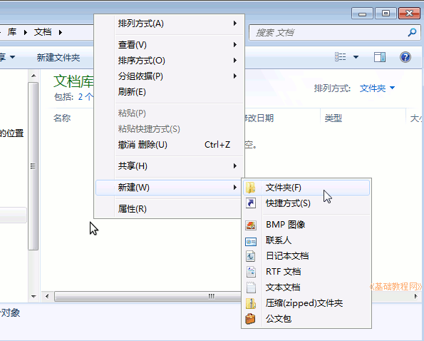
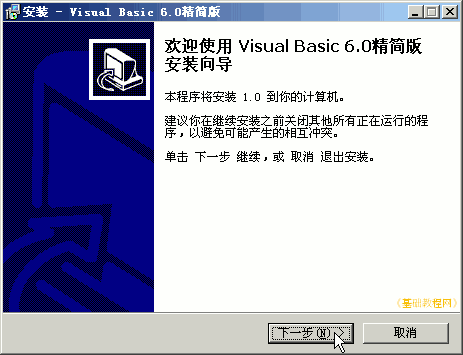
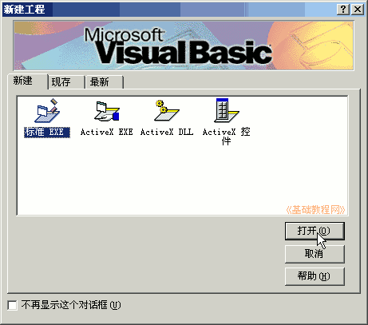
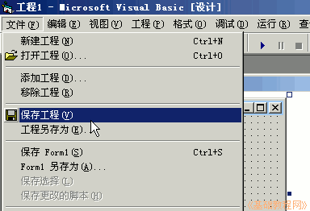
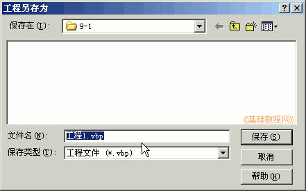

2011-2012 第一学期九年级 VB 教学课程设计
作者：TeliuTe 来源：基础教程网
一、安装和保存 返回目录 下一课学习目标：学会下载和安装 VB6，学会保存 VB 文件；
注意事项：要保存两次，输相同的名称，多的删除
1、下载和安装
1）打开我的文档，新建一个文件夹，名称为自己的班级或姓名；

2）打开浏览器，进入校园网下载，也可以在华军下载：http://www.onlinedown.net/soft/19976.htm；
3）双击下载的文件，一路点“下一步”到完成；

2、保存文件
1）在出来的“标准EXE”对话框里，直接点“打开”；

2）点菜单“文件－保存工程”，在出来的保存对话框里，打开自己的文件夹，文件名改成“第一课”；

3）然后再出来一个保存对话框，也输入“第一课”，记住要保存两次；

课后记 2011-8-26 20:45：
下载精简版的，挂到校园网里本节学习了安装和保存的基础知识，如果你成功地完成了练习，请继续学习下一课内容；
本教程由86团学校TeliuTe制作|著作权所有
基础教程网：http://teliute.org/
美丽的校园……
转载和引用本站内容，请保留作者和本站链接。